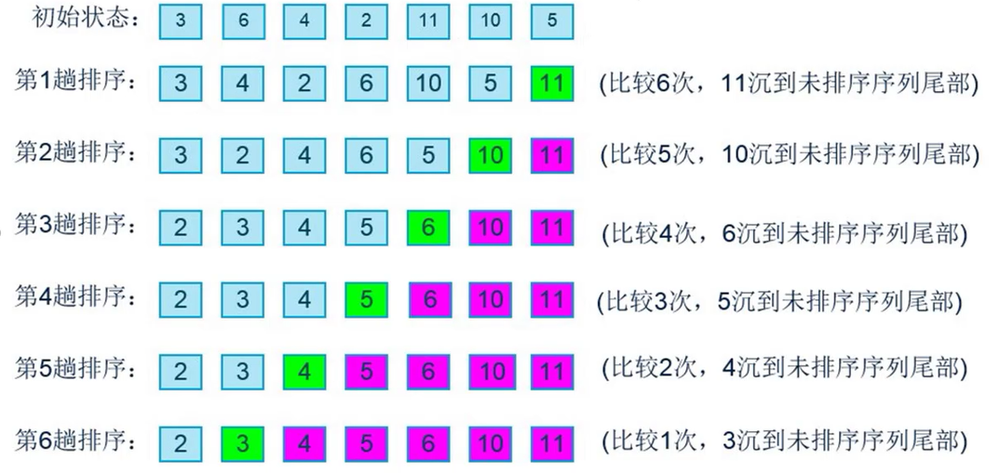

将各元素从头到尾依次进行比较相邻两个元素的大小关系
如果左边的大于右边的，那么两个元素替换位置
依次进行右移，那么最大的元素就会排在末尾
当上述过程完成后，继续重新开始比较，第二次比较只需要比较到倒数第二个位置即可
依次循环，便可完成排序

上图7个元素进行比较21次(6 + 5 + 4 + 3 + 2 + 1), 换算成N项数据就是(N-1) + (N-2) + (N-3) + (N-4)....+ 1),再进行归纳变为N * (N - 1) / 2
N * (N - 1) / 2 = N²/2 - N/2根据规则2只保留最高阶项变为N²/2(规则在README文件)
N²/2 根据规则3,去除最高项的常量,变为N²
因此冒泡排序复杂度为O(N²)